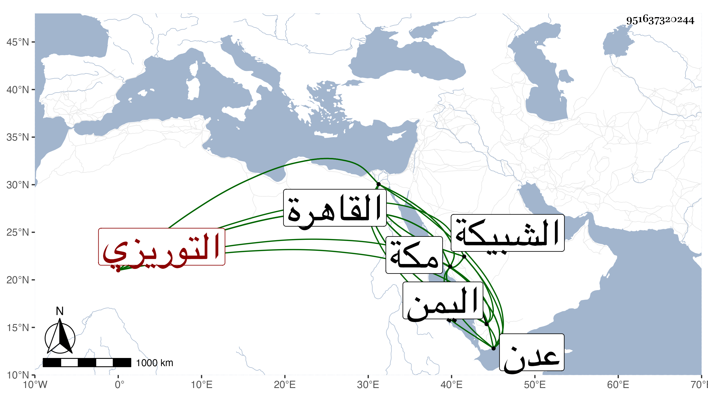

0902Sakhawi.DawLamic.ITO20230111-ara1.EIS1600.951637320244
Biography ID: 951637320244
14
محمد بن محمد بن محمد بن يوسف بن حاجي الجمال التوريزي أخو الفخر أبي بكر وعلي يشهر بابن بعلبند . هكذا ساق النجم بن فهد نسبه . ولد ببلده قيلان وقدم مع أبيه وإخوته إلى القاهرة فقطنوها ثم قدم مع أخويه مكة وسافر منها إلى اليمين فأقام بها مدة وولي بعدن التحدث في المتجر السلطاني ثم عاد إلى مكة مصروفا ثم إلى القاهرة ثم تسحب منها في سنة أربع وعشرين لديون عليه فقدم مكة وأقام بها مدة ثم سافر إلى اليمن فدام به مدة ثم رجع إلى مكة فدام حتى مات في المحرم سنة تسع وثلاثين ، وأرخه شيخنا في إنبائه سنة ثمان وسماه محمد بن علي ولم يزد ، ودفن بالشبيكة بوصية منه وهو في عشر التسعين سامحه الله قال وهو أخو علي المقتول في سنة أربع وثلاثين مع كونه لم يذكره في الإنباء إلا في سنة اثنتين وثلاثين .
